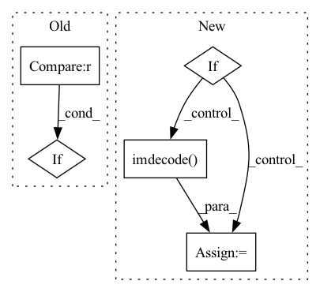

Pattern ID :36350
Before Change
def imread_cv2(im_path: str) -> np.ndarray:
img = cv2.cvtColor(cv2.imread(str(im_path)), cv2.COLOR_BGRA2RGB)
if img is None :
raise ValueError("Image can not be read")
else:
return imgAfter Change
def imread_cv2(im_src: Union[Path, str, bytes]) -> np.ndarray:
if isinstance(im_src, (Path, str)):
image = cv2.imread(str(im_src), cv2.IMREAD_UNCHANGED)
elif = cv2.imdecode( image_raw, cv2.IMREAD_UNCHANGED)
else:
raise TypeError("Unsupported type")
return cv2.cvtColor(image, cv2.COLOR_BGRA2RGB)In pattern: SUPERPATTERN
Frequency: 3
Non-data size: 5
Instances Fragment ID: 102948226
Project Name: oml-team/open-metric-learning
Commit Name: e939fb26411ed6c14044930dd11d701f6f30eb7c
Time: 2022-08-09
Author: aleksei.v.tarasov@gmail.com
File Name: oml/utils/images/images.py
M Class Name: AnonimousClass
N Class Name: AnonimousClass
M Method Name: imread_cv2(1)
N Method Name: imread_cv2(1)
M Parent Class:
N Parent Class:
M File Name: oml/utils/images/images.py
N File Name: oml/utils/images/images.py
M Start Line: 25
M End Line: 32
N Start Line: 27
N End Line: 36
Before Change
img = cv2.imread(img_file)
img = cv2.cvtColor(img, cv2.COLOR_BGR2RGB)
// following two cases are not explained in the original repo
if img.shape[0] == 2 :
img = img[0]
if img.shape[2] == 4:
img = img[:, :, :3]After Change
img = cv2.imread(image)
img = cv2.cvtColor(img, cv2.COLOR_BGR2RGB)
elif = cv2.imdecode( nparr, cv2.IMREAD_COLOR)
img = cv2.cvtColor(img, cv2.COLOR_BGR2RGB)
elif type(image) == np.ndarray:
if len(image.shape) == 2: // grayscale Fragment ID: 102948225
Project Name: fcakyon/craft-text-detector
Commit Name: 3a31dc821230f93229994c2075928fc374d80cf7
Time: 2021-04-07
Author: 34196005+fcakyon@users.noreply.github.com
File Name: craft_text_detector/image_utils.py
M Class Name: AnonimousClass
N Class Name: AnonimousClass
M Method Name: read_image(1)
N Method Name: read_image(1)
M Parent Class:
N Parent Class:
M File Name: craft_text_detector/image_utils.py
N File Name: craft_text_detector/image_utils.py
M Start Line: 11
M End Line: 19
N Start Line: 11
N End Line: 29
Before Change
return None
if self.lib.get_frame(self.cap, timeout, self.buffer, self.size) == 0:
return None
if self.real_size is None :
self.real_size = self.lib.get_size(self.cap)
img = np.frombuffer(self.buffer, dtype=np.uint8)[0:self.real_size]
if self.colorspace in [100, 101]:After Change
img = cv2.cvtColor(img.reshape((self.height,self.width,2)), cv2.COLOR_YUV2BGR_UYVY)
elif self.colorspace == 303:
return None
elif = cv2.imdecode( img, cv2.IMREAD_COLOR) ;
if self.flipped:
img = cv2.flip(img, 0)
return img Fragment ID: 102948216
Project Name: emilianavt/openseeface
Commit Name: c9af5913faf80d6159ba76d575562b5c227e041e
Time: 2020-09-26
Author: 38952746+emilianavt@users.noreply.github.com
File Name: dshowcapture.py
M Class Name: DShowCapture
N Class Name: DShowCapture
M Method Name: get_frame(2)
N Method Name: get_frame(2)
M Parent Class:
N Parent Class:
M File Name: dshowcapture.py
N File Name: dshowcapture.py
M Start Line: 121
M End Line: 127
N Start Line: 158
N End Line: 187